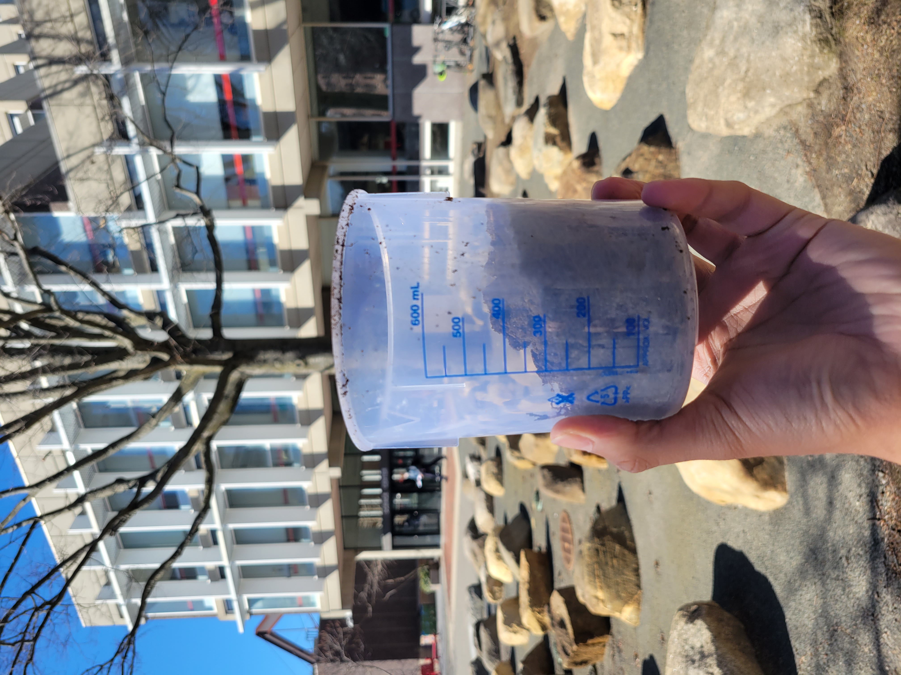
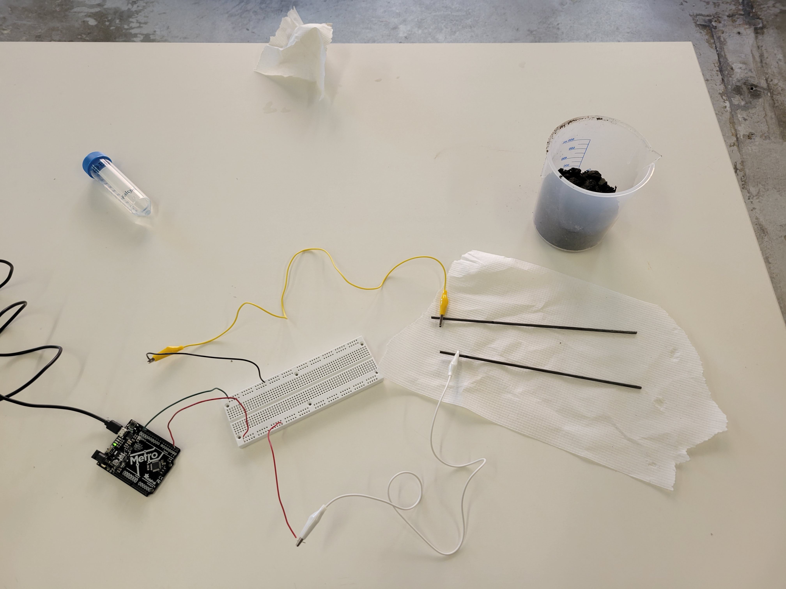
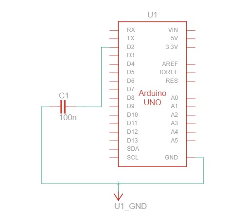
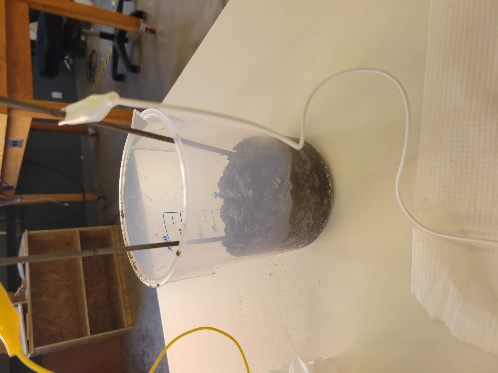
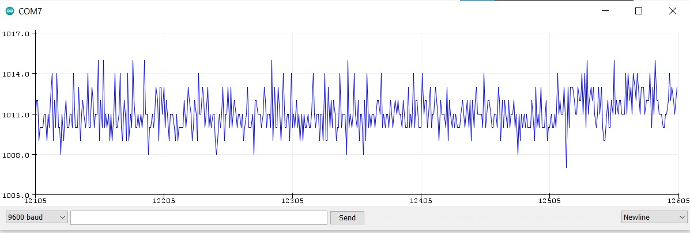
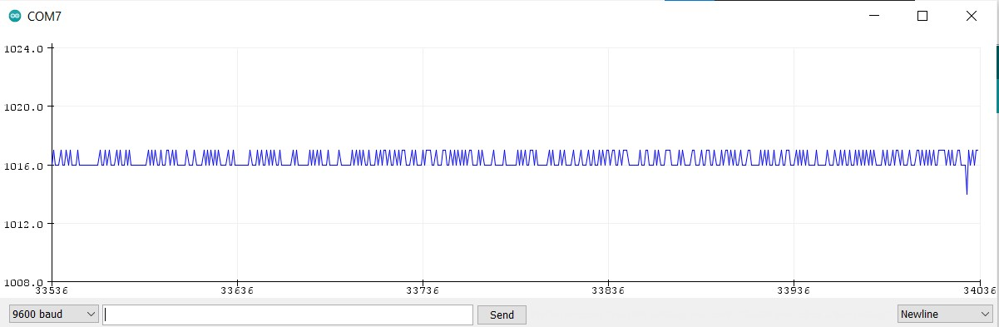
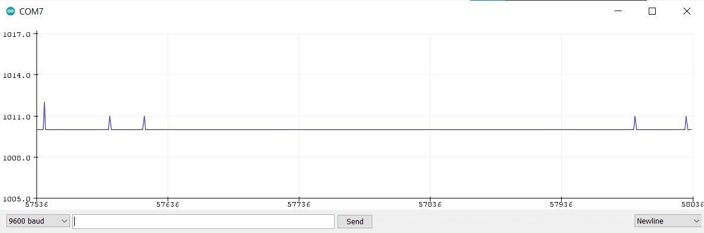
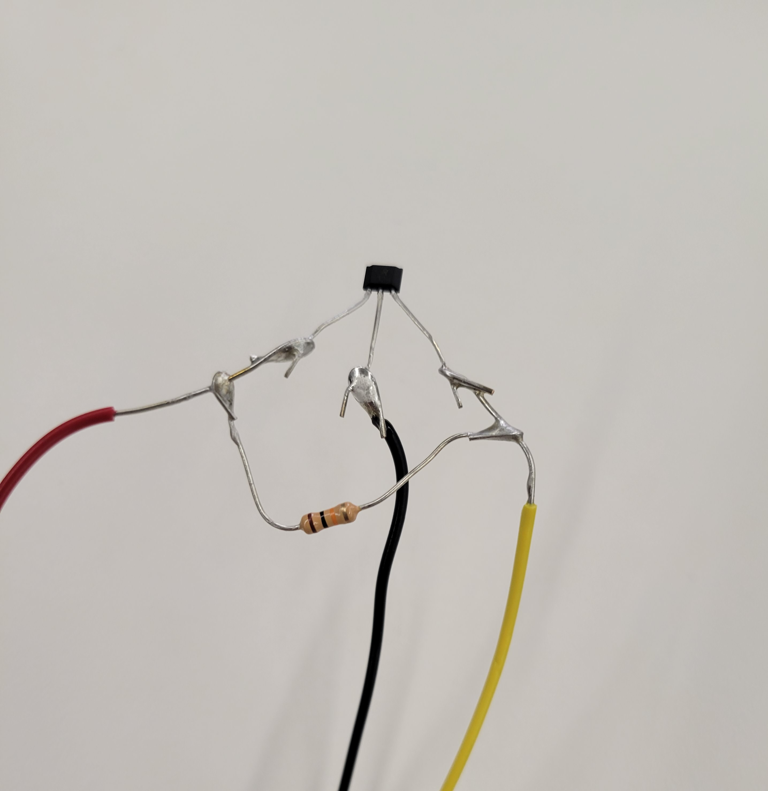
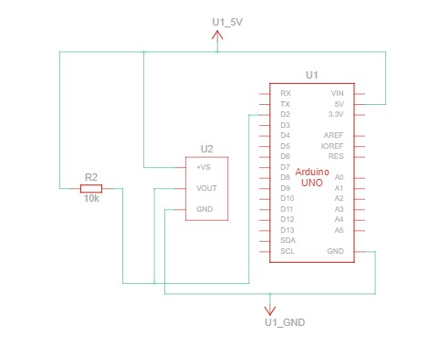
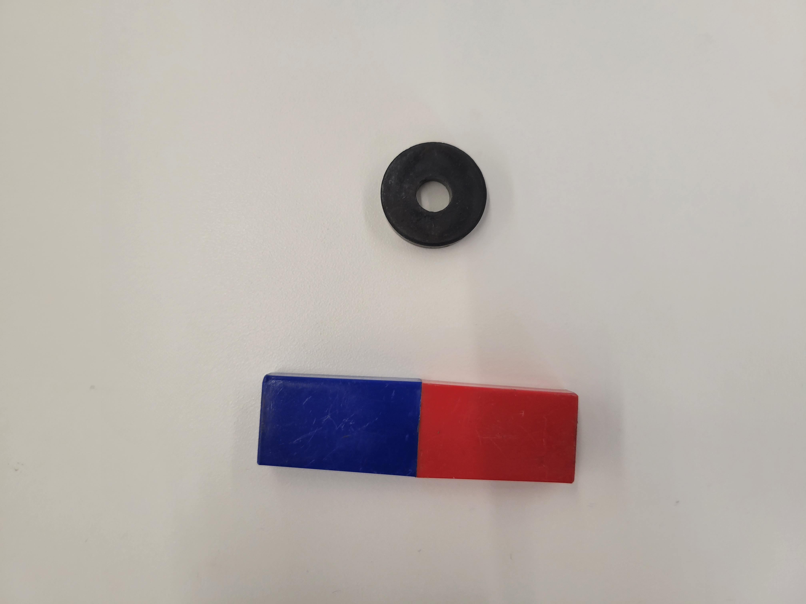

<div class="container-fluid">
### Week 6: Input Devices
This week, we learned about input devices, including both capacitive and resistance-based sensors.
The first part of this week's assignment involved us designing, creating, and calibrating a capacitance-based sensor. With my final project in mind, I selected a soil hygrometer.
A soil hygrometer is, at its simplest, a sensor that detects soil humidity using capacitance through a similar method to the "cup fullness" sensor demonstrated in class. One of the factors that affects capacitance is the permittivity of the material in between the polarized plates (the dielectric medium), and this sensor takes advantage of the fact that water has a different permittivity than soil, which further means that the permittivity of wet soil is different than the permittivity of dry soil.
The upshot is that a capacitance-based sensor should be able to measure this difference in permittivity.
To create and test this sensor, I first began by acquiring my sample. Using a shovel, I filled the bottom of a bowl with soil from the patch of dirt in front of the Science Center. I figured no one would miss it.

To make the sensor itself, I used two metal rods to be the two polarized plates of the capacitor, and connected them to a pin and ground using alligator clips.


I then placed the two probes into the soil and began adding water in 25 mL increments.

I used Serial Plotter to capture the following measurements.
Before adding any water, the sensor read approximately 1016:

After adding 25 mL it read approximately 1010 mL:

After adding 25 mL it still read approximately 1010 mL:

I suspect that this leveling off is due to the fact that the probes are exposed metal. Because the exterior of the probes are conductive, once the soil is sufficiently saturated, a connection forms between the probes and it becomes a regular circuit instead of a capacitor. This could be fixed in a future design by coating the probes in some kind of waterproof material, like plastic.
In the second part of this assignment, we choose a pre-existing sensor and help calibrate it. I selected a Hall effect sensor, which detects magnetic fields using the Hall effect, as the name suggests. Succinctly stated, the Hall effect is when a magnetic field creates a voltage in a piece of metal in a direction perpendicular to the magnetic field. The sensor detects this transverse voltage and sends it to the microcontroller.
I began by taking a Hall effect sensor and soldering jumper wires to the power, ground, and input terminals. I then soldered a 10k resistor to the power and input wires, which serves as a pull-up resistor, bringing the sensor output to 5V when no magnetic field is detected.


I then used two magnets to test this sensor: a bar magnet and a ring magnet.

I then used the following Arduino program to read the analog Hall effect manual input.
```
#define Hall_Sensor A0
#define Hall_Sensor_D 2
int Val1=0,Val2=0;
void setup() {
Serial.begin(9600);
pinMode(Hall_Sensor_D,INPUT);
}
void loop() {
Val1=analogRead(Hall_Sensor);
Serial.print(Val1);
Val2=digitalRead(Hall_Sensor_D);
Serial.print("\t");
Serial.println(Val2);
}
```
When pointed to the north of the bar magnet, the sensor read 600, and when pointed south, it read 400.
When pointed to the north of the ring magnet, the sensor read 520, and when pointed south, it read 480.